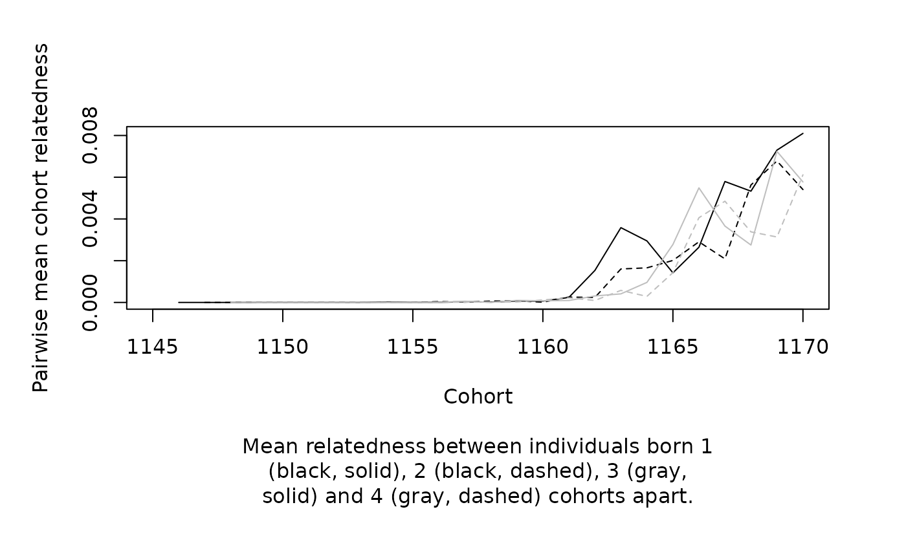
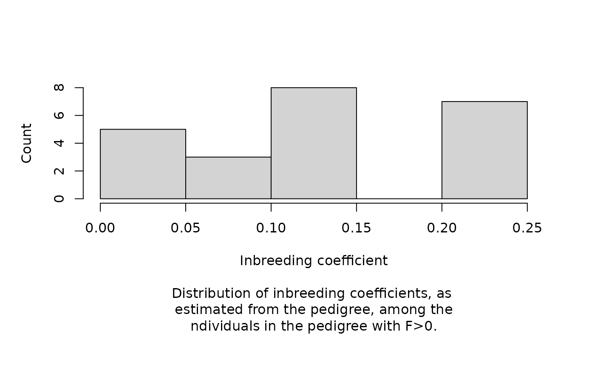
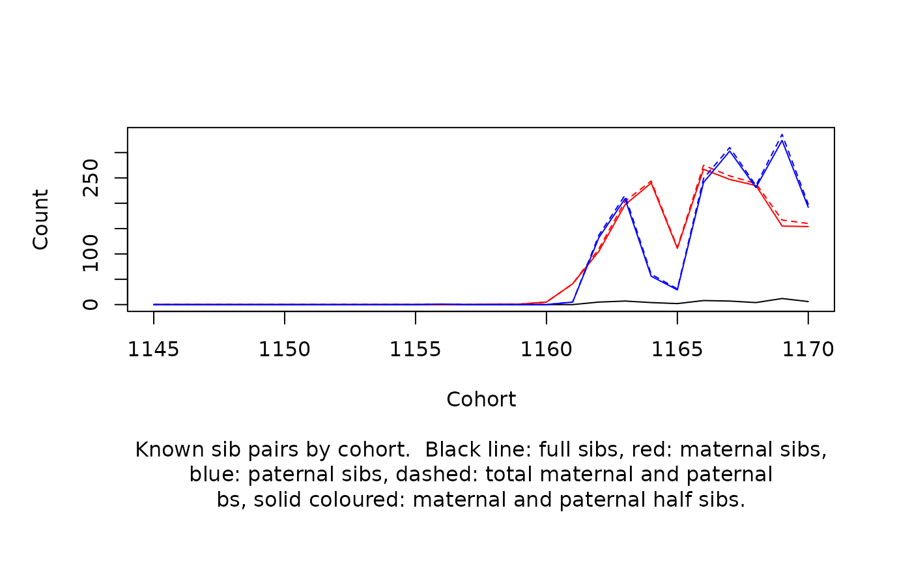
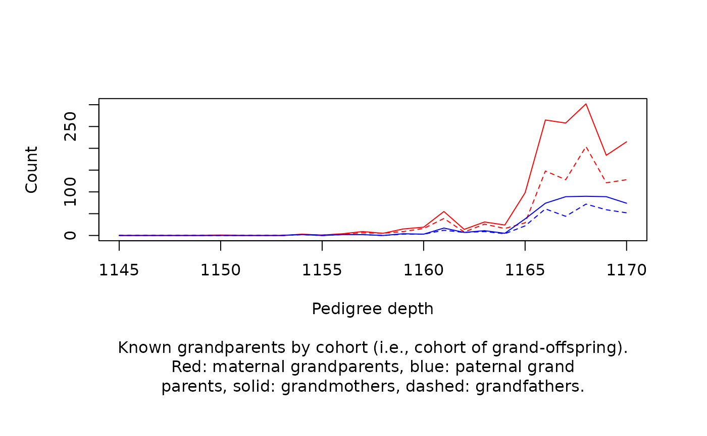
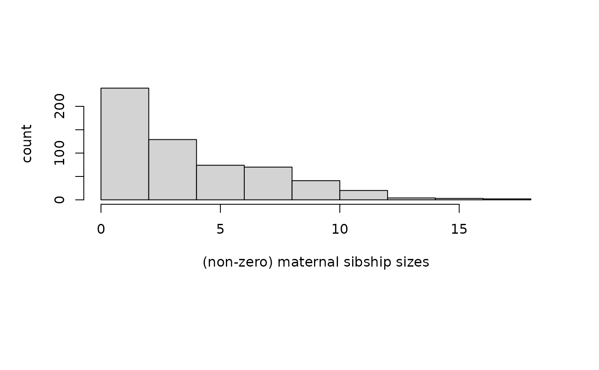
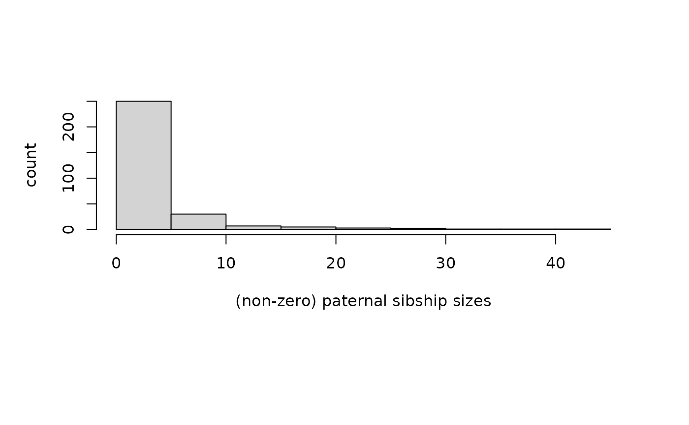
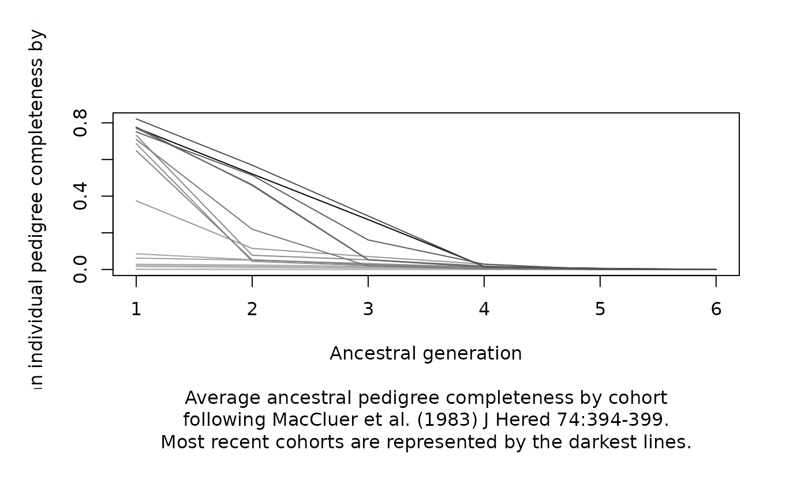

Statistics are those that will hopefully be useful for describing pedigrees to be used in quantitative genetic analyses of natural populations. This module will be most useful when cohort affinities for all individuals can be provided. All outputs are produced in a numerical form as well as in graphical summaries.
Usage
ped_stats(
Ped,
cohorts = NULL,
dat = NULL,
retain = "informative",
includeA = TRUE,
lowMem = FALSE
)Arguments
- Ped
A pedigree
- cohorts
(Optional) Cohort affinities for members of the pedigree
- dat
(Optional) Available data based upon which the pedigree can be pruned for just informative individuals
- retain
The default value ('informative') results in pedigree being pruned to only those individuals who's records contribute to estimation of quantitative genetic parameters with respect to the available data specified in
dat. Otherwise, specifying a value of 'ancestors' will result in the inclusion of all ancestors of phenotyped individuals.- includeA
If TRUE, additive genetic relatedness matrix is returned.
- lowMem
If TRUE, then stats based on calculation of A are not performed.
Value
- totalMaternities
Total number of maternities defined by the pedigree.
- totalPaternities
Total number of paternities defined by the pedigree.
- totalFullSibs
Total number of pair-wise full sib relationships defined by the pedigree.
- totalMaternalSibs
Total number of pair-wise maternal sib relationships defined by the pedigree. To get the number of maternal half sibs, subtract totalFullSibs.
- totalPaternalSibs
Total number of pair-wise paternal sib relationships defined by the pedigree. To get the number of paternal half sibs, subtract totalFullSibs.
- totalMaternalGrandmothers
Total number of maternal grandmothers defined by the pedigree.
- totalMaternalGrandfathers
Total number of maternal grandfathers defined by the pedigree.
- totalPaternalGrandmothers
Total number of paternal grandmothers defined by the pedigree.
- totalPaternalGrandfathers
Total number of paternal grandfathers defined by the pedigree.
- pedigreeDepth
The pedigree depth, i.e. maximum number of ancestral generations, for each individual.
- inbreedingCoefficients
Individual inbreeding coefficients
- maternalSibships
Sibship size of each individual appearing the the dam column of the pedigree.
- paternalSibships
Sibship size of each individual appearing the the sire column of the pedigree.
- cumulativeRelatedness
Proportion of pair-wise relatedness values less than values ranging from 0 to 1.
- relatednessCategories
Discretized distribution of relatedness.
- analyzedPedigree
Returns the pedigree.
- sampleSizesByCohort
(Optional) Number of individuals belonging to each cohort.
- maternitiesByCohort
(Optional) Number of assigned maternities by offspring cohort.
- paternitiesByCohort
(Optional) Number of assigned paternities by offspring cohort.
- fullSibsByCohort
(Optional) Number of pair-wise full sib relationships by cohort - note the sum of these need not be equal to totalFullSibs in pedigrees of long-lived organisms.
- maternalSibsByCohort
(Optional) Number of pair-wise maternal sib relationships by cohort - note the sum of these need not be equal to totalMaternalSibs in pedigrees of long-lived organisms.
- paternalSibsByCohort
(Optional) Number of pair-wise paternal sib relationships by cohort - note the sum of these need not be equal to totalPaternalSibs in pedigrees of long-lived organisms.
- maternalGrandmothersByCohort
(Optional) Numbers of maternal grandmother assignments by offspring cohort.
- maternalGrandfathersByCohort
(Optional) Numbers of maternal grandmother assignments by offspring cohort.
- paternalGrandmothersByCohort
(Optional) Numbers of paternal grandfather assignments by offspring cohort.
- paternalGrandfathersByCohort
(Optional) Numbers of paternal grandfather assignments by offspring cohort.
- cumulativePedigreeDepth
(Optional) Distributions of pedigree depth by cohort.
- meanRelatednessAmongCohorts
(Optional) Mean relatedness among cohorts.
- cohorts
(Optional) Returns cohort designations.
Graphical summaries of a number of these summary statistics are printed to the console when graphicalReports=='y'.
Examples
data(gryphons)
pedigree <- gryphons[, 1:3]
gryphons_ped_stats <- ped_stats(pedigree,
cohorts = gryphons$cohort
)
gryphons_ped_stats$totalMaternities
#> [1] 2435
gryphons_ped_stats$paternitiesByCohort
#> 1145 1146 1147 1148 1149 1150 1151 1152 1153 1154 1155 1156 1157 1158 1159 1160
#> 0 0 0 0 0 0 0 0 0 3 0 4 2 2 9 6
#> 1161 1162 1163 1164 1165 1166 1167 1168 1169 1170
#> 33 80 118 75 91 161 157 163 128 124
summary(gryphons_ped_stats)
#> sumData
#> records 4.918000e+03
#> maternities 2.435000e+03
#> paternities 1.156000e+03
#> full sibs 8.600000e+01
#> maternal sibs 6.957000e+03
#> maternal half sibs 6.871000e+03
#> paternal sibs 6.138000e+03
#> paternal half sibs 6.052000e+03
#> maternal grandmothers 1.503000e+03
#> maternal grandfathers 8.890000e+02
#> paternal grandmothers 5.070000e+02
#> paternal grandfathers 3.540000e+02
#> maximum pedigree depth 6.000000e+00
#> founders 2.483000e+03
#> mean maternal sibsip size 4.183849e+00
#> mean paternal sibsip size 3.853333e+00
#> non-zero F 2.300000e+01
#> F > 0.125 7.000000e+00
#> mean pairwise relatedness 1.129934e-03
#> pairwise relatedness>=0.125 4.373784e-03
#> pairwise relatedness>=0.25 1.672662e-03
#> pairwise relatedness>=0.5 3.047746e-04
plot(gryphons_ped_stats)

#> Press <s> to save current plot or press <Enter> to continue...

#> Press <s> to save current plot or press <Enter> to continue...
#> Press <s> to save current plot or press <Enter> to continue...
#> Press <s> to save current plot or press <Enter> to continue...
#> Press <s> to save current plot or press <Enter> to continue...

#> Press <s> to save current plot or press <Enter> to continue...

#> Press <s> to save current plot or press <Enter> to continue...
#> Press <s> to save current plot or press <Enter> to continue...

#> Press <s> to save current plot or press <Enter> to continue...

#> Press <s> to save current plot or press <Enter> to continue...
#> Press <s> to save current plot or press <Enter> to continue...

#> Press <s> to save current plot or press <Enter> to continue...